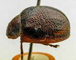
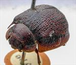

Click on images to enlarge
{kind=link}

Fig. 1. Paropsis karattae type specimen, lateral view
{kind=link}

Fig. 2. Paropsis karattae type specimen,oblique view
{kind=link}
Fig. 3. Paropsis karattae, description
Name
Paropsis karattae Blackburn, 1896
Corresponds to
Diagnosis and Notes
Blackburn (1896) deals with karattae as part of his 'subgroup i' (i.e., those species with "strongly marked characters"). Within that group, he characterises it as:
AAA. Prosternum normal, but other characters exceptional, as follows:-;
BBB. The exceptional characters lie in the elytral epipleurae;
CC. Inner (horizontal) part of epipleurae nearly reaches the apex as a distinct ledge;
D. Basal ventral segment coarsely punctured;
E. Sides of prothorax only slightly explanate.
This is almost certainly Ta177, also found on Kangaroo Island. The species is somewhat variable, but of the three specimens that I have seen, one is very close to the type specimen in the rather linear arrangement of small verrucae. Couplet E in the key is of little use in discriminating this species, as this character varies widely among specimens of latipes from the same location, and is likely to do so in karattae. T. karattae is very closely related to latipes/chapuisi, with most characters overlapping extensively.
Type specimen
Location: BMNH
Label data: /“Type” (red-bordered circle)/ “6150 Kang. I. T”/ “Blackburn coll. 1910-236.”/ “Paropsis karattae, Blackb.”/.
Female; Size: 10.87 (L) x 9.25 (W) x 5.3 (H) mm; A-A: 1.72 mm, HCE/BL ~ 23.1% (approximate, obtained from measurement of lateral view of specimen photo).
Original description
Translation of original description (Figure 4) by ChatGPT, 03/2026:
♀. Broadly oval, moderately convex, the greatest height (seen from the side) placed well before the middle of the elytra; less shining; chestnut, with some spots on the prothorax, the suture, disc, and outer margin of the elytra, and numerous verrucae regularly arranged in rows, and also the underside spotted, black; antennae darkened toward the apex; head and prothorax (except for colour) almost as in P. chapuisi, but the sides of the latter scarcely distinctly flattened; scutellum with some impressed punctures; elytra beneath the humeral callus distinctly triangularly depressed, behind the base scarcely distinctly impressed, rather closely rugulose in a somewhat reticulate manner but less distinctly punctate; the subhumeral groove less well defined and entirely absent before the apex; humeral callus at its inner margin much more distant from the suture than from the lateral margin of the elytra; epipleura and basal ventral segment sculptured as in P. chapuisi. Length 5 lines [~10.6 mm], width 4⅕ lines [~8.9 mm].
References
Blackburn, T. 1896, "Revision of the genus Paropsis. Part I", Proceedings of the Linnean Society of New South Wales, vol. 21, no. 4, 637-693 (page 651).
Copyright © 2026. All rights reserved.